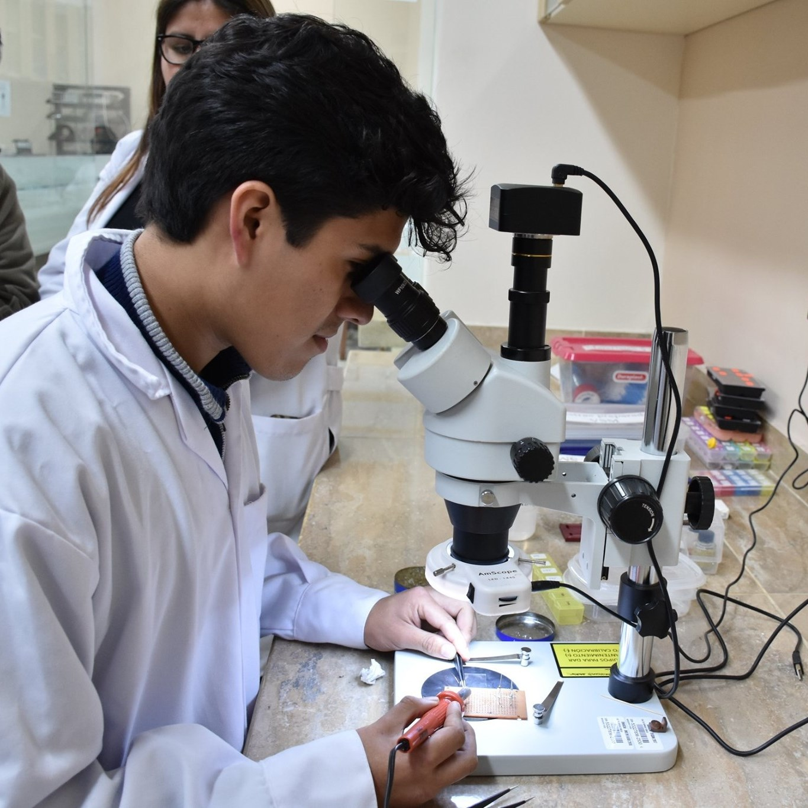

Curriculum Vitae

Manuel Gustavo Pinedo Cuba, MSc
mgpinedocuba@outlook.com
+51 971735570
Work experience
2025 – act.
Research assistant at the Catalan Institute of Nanoscience and Nanotechnology (ICN2), Barcelona, Spain.
2022 – 2025
Laboratory technician at the Centro de Investigaciones Tecnológicas, Biomédicas y Medioambientales (CITBM), Lima, Peru.
2020 – 2021
Practical instructor at the Universidad Nacional Mayor de San Marcos of the Electromagnetism I course.
Education
2021 – 2023
Master in Physics with a mention in condensed matter physics. Facultad de Ciencias Físicas, Universidad Nacional Mayor de San Marcos.
2015 – 2019
Degree in Physics with a mention in material science. Facultad de Ciencias Físicas, Universidad Nacional Mayor de San Marcos.
Scientific production
Scientific articles
- Manuel G. Pinedo-Cuba, Renzo Rueda-Vellasmín, Justiniano Quispe-Marcatoma, Carlos V. Landauro, Valberto P. Nascimento, Noemi R. Checca-Huamán, Víctor A. Peña-Rodríguez and Edson C. Passamani, Influence of growth temperature on interface diffusion and magnetic properties of Ni-Mn-Sn-Pd thin films. Thin Solid Films 2026, 833, 140843.
- Manuel G. Pinedo-Cuba, José M. Caicedo-Roque, Jessica Padilla-Pantoja, Justiniano Quispe-Marcatoma, Carlos V. Landauro, Víctor A. Peña-Rodríguez and José Santiso, Epitaxial Growth of Ni-Mn-Ga on Al2O3(11-20) Single-Crystal Substrates by Pulsed Laser Deposition. Surfaces 2025, 8(2), 35.
- Manuel Torres, Manuel Pinedo, Justiniano Quispe, and Carlos Landauro, Implementación de un sistema de pulverización catódica con magnetrones de caras opuestas para el crecimiento de películas delgadas de hidroxiapatita. Revista de Investigación de Física, 27(1).
Poster and oral presentations
- Manuel G. Pinedo-Cuba, José M. Caicedo-Roque, Jessica Padilla-Pantoja, Justiniano Quispe-Marcatoma, Carlos V. Landauro, Víctor A. Peña-Rodríguez and José Santiso, Grown of Ni-Mn-Ga thin films by pulsed laser deposition. Poster presented in the IEEE NanoPerú 2024, Lima, Perú, 2024.
- Manuel G. Pinedo-Cuba, Manuel G. Pinedo-Cuba, Renzo Rueda-Vellasmín, Carlos V. Landauro, Justiniano Quispe-Marcatoma, Víctor A. Peña-Rodríguez, Anderson Pashoa, Valberto P. Nascimento, Noemi R. Checca-Huamán and Edson C. Passamani, Structural effects of Palladium incorporation in thin films of Ni50Mn36Sn14 by co-deposition. Poster presented in the International School on Fundamental Crystallography: Seventh MaThCryst school in Latin America, Lima, Perú, 2024.
- Manuel G. Pinedo-Cuba, H. Tarazona, C. V. Landauro, and J. Quispe-Marcatoma, Implementación del método de muestreo adaptativo para el estudio de propiedades magnéticas de nanopartículas de Fe y Co. Poster presented in the IEEE NanoPerú 2023: Trends in Nanoscience and Nanotechnology, Lima, Perú, 2023.
- J. Agüero, M. G. Pinedo-Cuba, M. Yactayo, J. Quispe-Marcatoma, and C. V. Landauro, Implementación de un sistema de medida de resistividad en películas delgadas nanoestructuradas con interfase labview utilizando el método van der pauw. Poster presented in the IEEE NanoPerú 2022, Lima, Perú.
- M. Yactayo, M. G. Pinedo-Cuba, J. C. Rojas-Sanchez, J. Quispe-Marcatoma, and C. V. Landauro, Thickness optimization for effective spin hall angle in W/Fe bilayers. Poster presented in the International Workshop on Spintronics 2022, Bariloche, Argentina.
Skills
Languages
Spanish, Portuguese, and English
Programming
Fortran 90, Python, Julia, Bash, ANSI-C, and LaTeX
Softwares
Quantum Espresso, Vampire, and Lammps.
Laboratory equipment
Sample preparation: Magnetron sputtering, Pulsed Laser Deposition. Characterization: x-ray diffractometer (Bruker), scanning electron microscope (Thermo Fisher), Atomic force microscopy (Nanosurf), vibrating sample magnetometer (Quantum Design), and Physical properties measurement system (Quantum Design).
Research projects
2024
Synthesis of Ni2MnGa thin films grown by pulsed laser deposition. NFFA-Europe, proposal ID530.
2022
Study of the effect of dimensionality on martensitic phase transitions and magnetic properties of Heusler Ni2MnGa alloys prepared by mechano-synthesis and sputtering. Code PE501079047-2022.
2021
Study of superconductivity in two-dimensional Fibonacci-type networks and its relationship with electronic and optical properties. PIB-UNMSM 2021 Project. Code B21130591 (05753-R-21).
2020
Synthesis, theoretical modeling and structural and magnetic characterization of graphene composites with cobalt nanoparticles. PIB-UNMSM 2020 Project. Code B20131521 (R.R. 01686-R-20).